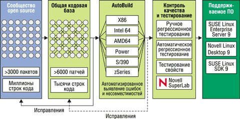
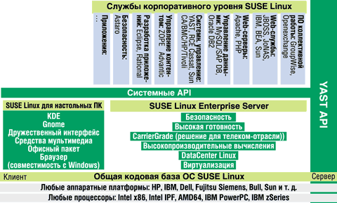
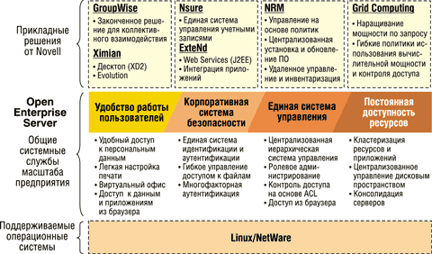

Кирилл Степанов,
технический директор Novell в России и СНГ
Профессионалы, работающие в сфере высоких технологий, ясно видят происходящие в индустрии разработки ПО фундаментальные перемены. Один из индикаторов этих перемен - появление, развитие и широкое принятие ПО open source.
Признаки кризиса, приведшего в итоге к "тектоническим сдвигам" в использовании ПО, отчетливо обозначились в софтверной индустрии еще в 90-х годах прошлого века. При создании систем нового поколения компании-разработчики столкнулись с проблемой возрастающей сложности, неадекватностью существующего инструментария и нехваткой программистов. Ни одна корпорация не могла собрать такую команду, которая написала бы и тщательно протестировала сложнейшую систему достаточно быстро - так, как того требует рынок. В результате качество ПО стало падать, а из-за ошибок в ПО возникали сбои в работе критически значимых систем. Сообщество open source, возникшее из разрозненных университетских проектов, смогло стать серьезной силой на рынке технологий во многом потому, что оно предложило новую, более эффективную организационную модель разработки.
Фактически изменение подходов к созданию и использованию ПО во многих странах уже произошло. Освоение Linux-решений предприятиями начиналось с внешнего контура и постепенно проникало все глубже в корпоративные инфраструктуры. На серверной стороне ОС Linux распространялась от Web- и прокси-серверов к DNS, принт- и файл-серверам, вычислительным кластерам. Если раньше организация даже небольших баз данных рабочих групп под Linux была скорее экзотикой, то сегодня под управлением этой ОС работают системы SAP, Oracle, PeopleSoft и другие приложения сопоставимого уровня сложности. Достаточно упомянуть SABRE - глобальную распределительную систему оказания услуг путешественникам, которая связывает десятки тысяч туристических агентств и отелей, сотни авиа- и железнодорожных компаний по всему миру. Эта система, приносящая своим владельцам более 2 млрд долл. в год и обслуживающая только в части заказа авиабилетов сотни миллионов человек, использует Linux и СУБД, разрабатываемые в открытых кодах.
На настольных компьютерах освоение решений open source шло медленнее, однако сегодня Linux можно встретить не только на рабочих станциях системных администраторов, инженеров и разработчиков. Linux все более активно используется в POS-терминалах, на складских и производственных рабочих станциях. Последний рубеж - развертывание Linux на ПК обычных пользователей - сейчас уже пройден многими государственными учреждениями стран Европы, и этот опыт, несомненно, вызовет новую волну освоения open source.
Согласно опросу SG Cowen, в наши дни Linux используется в 80% сетей (в 72% случаев как серверная, в 15% - как настольная ОС). По оценкам Gartner, 45% средних компаний используют Linux, а в опросе CIO.com 54% респондентов отметили, что планируют к 2007 г. использовать open source как основные технологии в корпоративных инфраструктурах.
Интерес заказчиков к решениям на базе open source, естественно, вызывает встречное движение со стороны поставщиков технологий. Сегодня практически не осталось закрытых стандартов, все компании-разработчики используют либо поддерживают ПО open source в своих решениях. Но преимущества получают те, кто уловил переломный момент в развитии софтверной индустрии и успел разработать собственную Linux-стратегию. Именно эти компании, в число которых входят IBM, HP и Novell, предлагают сегодня наиболее развитые решения на базе open source.
SUSE Linux - солидное основание
Для Novell переход к поддержке ПО open source не представлял серьезных трудностей, поскольку корпорация уже несколько лет предлагает сетевые службы, независимые от конкретных платформ. Большинство продуктов Novell работают как с NetWare, так и с Windows, а с ростом популярности Linux компания стала портировать собственные сетевые службы и на эту платформу. Сама операционная система NetWare, начиная с 6-й версии, рассматривается в Novell не столько как ядро, сколько как набор сервисов.
Приобретение фирм-разработчиков Ximian и SuSE Linux AG завершило формирование Linux-стратегии Novell. Корпорация стала обладателем ведущих Linux-дистрибутивов и инструментов управления Linux-системами.
SuSE Linux AG до слияния c NovellКомпания SuSE Linux AG (http://www.suse.de) со штаб-квартирой в Германии и офисами в США, Европе и Латинской Америке была основана в 1992 г. До слияния с Novell оборот компании превышал 40 млн долл., штат ее насчитывал 350 сотрудников. Первый дистрибутив Linux вышел в 1993 г., в 2000 г. появились первый дистрибутив SuSE Linux Enterprise Server и Linux-дистрибутив для мэйнфрейма IBM zSeries. В 2003 г. выпущены дистрибутивы для Itanium 2 и AMD64, а также первый на рынке дистрибутив Carrier Grade Linux (ОС для телекоммуникационной отрасли). В январе 2004 г. продукты компании прошли сертификацию безопасности уровня EAL 3+. Серверные продукты SuSE Linux лидируют на рынке 64-разрядных систем, занимают около 80% рынка Linux для S/390 и zSeries, более 50% рынка i/pSeries. Дистрибутивы SuSE Linux проходят сертификацию на совместимость с оборудованием и ПО ведущих поставщиков, в том числе IBM, HP, SAP, Oracle и т. д.
|
Модель разработки
Дистрибутив SUSE Linux Enterprise Server (SLES) исходно создавался как система корпоративного уровня - именно поэтому на разработку, тестирование и отладку SLES 8 ушло около трех лет. Первоначально команда немецких разработчиков использовала открытые тексты для сборки дистрибутива SUSE Linux Professional. Коды дистрибутивов SUSE возвращаются в сообщество open source, где проходят расширенное тестирование, с тем чтобы включать в серверные дистрибутивы SUSE только самые надежные и проверенные разработки. Программные пакеты, имеющиеся в сообществе и у самой SUSE Linux, собираются вручную и затем преобразуются в .srpm - исходный код, формирующий собственно пакеты SUSE Linux. После этого автоматически компилируются .rpm - бинарные пакеты SUSE, создаются ISO-образы SUSE Linux, патчи для свободного скачивания, собираются коробочные варианты дистрибутивов и SLES. В процессе разработки несколько раз проводится внешнее и внутреннее тестирование дистрибутивов, после чего выпускаются коммерческие дистрибутивы и образы для инсталляции. В целом процесс разработки серверных дистрибутивов SUSE можно прогнозировать на 12-18 месяцев вперед.
Особенность дистрибутивов SUSE Linux, которые сейчас служат основой всех Linux-решений Novell, - использование общей кодовой базы для всех платформ и применение технологии AutoBuild. Эта разработанная SuSE Linux AG система автоматического создания дистрибутивов собирает и тестирует пакеты ОС для любых платформ, от Intel х86 до мэйнфреймов, проверяет взаимодействие между ними и обеспечивает полную совместимость всех видов SUSE Linux. Процесс создания разработки дистрибутивов SUSE Linux показан на рис. 1.
|  |
| Рис. 1. Разработка Novell SUSE Linux.
|
Благодаря использованию общей кодовой базы, единообразию дистрибутивов SUSE Linux на всех платформах и их совместимости друг с другом и иными корпоративными системами Novell SLES снижает стоимость владения ИТ-инфраструктурой, затраты на обучение администраторов и обеспечивает самый высокий уровень переносимости приложений сторонних разработчиков.
Еще одно преимущество продуктам Novell SUSE Linux обеспечивает стратегическое партнерство компаний SuSE Linux AG и Novell с поставщиками оборудования и бизнес-решений, такими, как Intel, IBM, HP, AMD, Fujitsu Siemens Computers, Sun, Computer Associates, SAP, Oracle, BEA, Sybase и т. д. В результате Linux-платформа Novell поддерживает не только традиционные сетевые службы, разрабатываемые корпорацией, но и многочисленные решения ее партнеров. Партнеры Novell участвуют и в циклическом процессе поддержки и сопровождения ПО Novell SUSE на следующих этапах.
Нулевая фаза. Инцидент третьего уровня (обнаружение ошибки кода).
Фаза 1. Подготовка к экстренному исправлению. На этом этапе возможно совместное с партнерами документирование зависимостей в различных системах.
Фаза 2. Временное исправление ошибки, соответствующее известным на данный момент условиям. Здесь партнеры могут выполнять интегрированное тестирование пакетов .tgz, .srpm и .rpm.
Фаза 3. Ресертификация и включение исправлений в состав SLES. Повторная сертификация патчей проводится как разработчиками Novell SUSE, так и партнерами корпорации.
Фаза 4. Предоставление исправленных версий клиентам для инсталляции.
Благодаря такому многоуровневому тестированию решения SUSE Linux отличаются высокой надежностью, что подтверждается независимыми исследованиями. В частности, SLES - первая на рынке Linux операционная система, получившая сертификат Carrier Grade Linux. Данный отраслевой стандарт разработан в кооперации с телекоммуникационными компаниями и отвечает повышенным требованиям к надежности системы, встроенным функциям обработки ошибок и резервирования (подробнее см. http://www.osdl.org/lab_activities/carrier_grade_linux).
SUSE Linux Enterprise Server используется в масштабных системах, например, в проекте Distributed Terascale Facility (DTF), организованном USA National Science Foundation и рядом суперкомпьютерных центров. DTF - это распределенная система кластеров, позволяющая научным организациям США и всего мира использовать высокопроизводительные вычислительные ресурсы для различных исследований, в том числе для моделирования климатических процессов. В проекте используется SLES 8 на платформе Intel Itanium 2, общее число процессоров превышает 3 тыс., объем данных, по предварительным расчетам, достигнет 600 Тбайт.
SUSE Linux Enterprise Server 9 - новые возможности
Летом 2004 г. Novell выпустила первый в отрасли серверный дистрибутив на базе ядра Linux 2.6, добавив к его возможностям собственные расширения и доработки. В частности, SLES 9 способен поддерживать до 512 процессоров и до 32 тыс. дисковых устройств. Число уникальных пользователей и групп увеличилось с 65 тыс. до 4 млрд, число одновременно поддерживаемых процессов - до 65 тыс.
Производительность системы в SLES 9 повышена за счет гибких алгоритмов ввода-вывода. По умолчанию в SLES 9 используется CFQ (Complete Fair Queuing) - алгоритм, предоставляющий процессам системные ресурсы в равномерных долях, что оптимально в большинстве случаев. Алгоритм дедлайнов устанавливает максимально допустимое время обслуживания каждого запроса и позволяет сократить задержки и улучшить пропускную способность, что очень важно для больших баз данных. Алгоритм прогнозирования регулярных запросов хорош для файловых и Web-серверов. Наконец, алгоритм No-Op предполагает, что система сама устанавливает очередность, как в случае сложных устройств хранения. Помимо этих четырех алгоритмов, в SLES 9 применяются прозрачный и асинхронный механизмы ввода-вывода, а также многопотоковость, повышающие пропускную способность системы и возможности переключения при отказах.
Практические следствия улучшений дистрибутива SLES уже очевидны: в недавно проведенном бенчмаркинге производительности баз данных система Oracle 10g на платформе NEC Express 5800/1320Xd (32 процессора Intel Itanium 2 частотой 1,5 ГГц, 6 Мбайт кэша L3) под управлением SLES 9 показала наилучший результат - 683 575 tpmC. Соотношение цена/производительность составило 5,99 долл./tpmC.
Новые возможности масштабирования Linux-систем обеспечиваются в SLES 9 за счет поддержки технологий Native POSIX Thread Library for Linux (NPTL), Hyper-Threading, InfiniBand и NUMA (non-uniform memory access).
Оценочную 30-дневную версию SLES 9 можно загрузить по адресу http://www.novell.com/products/linuxenterpriseserver/eval.html.
Архитектура решений Novell на платформе SUSE Linux
На сегодня Novell обладает, пожалуй, самым обширным набором инфраструктурных решений на базе ПО open source. В портфеле предложений корпорации - серверные платформы SUSE Linux Enterprise Server и SUSE Linux Standard Server, набор сетевых служб Novell Nterprise Linux Services (NNLS), дистрибутив SUSE Linux и продукты Ximian для настольных систем, средства системного управления в гетерогенных сетях Red Carpet Enterprise и ZENworks Linux Management. Решения Novell могут удовлетворить практически любые требования заказчиков, независимо от размера и географической распределенности компании и стоящих перед ней задач. В то же время Novell предлагает возможность выбора при создании и модернизации ИТ-инфраструктуры: сетевые службы Novell могут работать как на платформе SUSE Linux, так и в среде Red Hat Enterprise Linux. Развертывая инфраструктуру сетевых служб на платформе SUSE Linux Enterprise Server, организации получают подкрепленную глобальной поддержкой open source альтернативу другим ОС. Архитектура решения на платформе SUSE Linux представлена на рис. 2.
|  |
| Рис. 2. Архитектура решения на платформе Novell SUSE Linux.
|
Открытая платформа и совместимость решений Novell с коммерческими разработками других компаний, а также с ПО open source позволяют применять в среде предприятия самые разные продукты, имеющиеся на рынке. Так, альтернативные варианты ПО для создания инфраструктуры печати, управления документами и совместной работы представлены в табл. 1.
Таблица 1. Выбор ПО для создания инфраструктуры сетевых служб
| ПО open source | Коммерческие разработки | |
| Совместная работа | Sendmail, Twiki, Zope | GroupWise, Openexchange |
| Доступ к файлам | NFS, SAMBA, iFolder | NCP |
| Сервисы печати | CUPS | iPrint |
| Web | Apache, Tomcat | Covalent |
| Файловые системы | EXT3, Reiser | NSS |
Для центров обработки данных, в которых ставятся задачи предоставления и поддержки критически важных бизнес-приложений, в том числе ERP-, CRM- и SCM-систем и корпоративных Web-сайтов, также имеются альтернативные open source продукты (табл. 2).
Таблица 2. Выбор ПО для организации центра обработки данных
| ПО open source | Коммерческие разработки | |
| Приложения | Compier | MySAP.com |
| Серверы приложений | Jboss, JoNAS | WebSphere, WebLogic |
| Базы данных | MySQL, Ingres, Postgres | Oracle, DB2 |
| Файловые системы | EXT3, XFS, Reiser | GFS, OCFS2, PSFS |
| Высокая доступность | Heartbeat | VCS, Matrix Server |
| Volume Management | EVMS | VxVm |
Ряд представленных в табл. 1 и 2 продуктов входит в доступный уже сейчас пакет Novell Nterprise Linux Services 1.0. Для управления документами NNLS 1.0 предлагает сетевые службы Novell iFolder и Novell NetStorage, а также оптимизированную версию ПО с открытым кодом Samba, которая позволяет с рабочих станций Windows обращаться к файлам на Linux-серверах. Novell iFolder синхронизирует файлы на жестких дисках рабочих станций Windows и на защищенном сервере, к которому можно обращаться через Web-браузеры настольных, мобильных и карманных компьютеров при наличии соответствующих привилегий. Novell iFolder защищает данные при передаче по сети и при хранении на сетевых серверах, а также обеспечивает их сохранность методом резервного копирования и синхронизации по всем пользовательским системам.
Службы печати Novell iPrint и Windows-клиент iPrint автоматически устанавливают нужные драйверы принтера на рабочие станции Windows и облегчают ИТ-персоналу задачу создания инфраструктуры печати на базе Интернета. iPrint поддерживает масштабирование до сотен принтеров на сервер и дает возможность всем пользователям, включая удаленных и мобильных сотрудников, распечатывать документы на любом сетевом принтере с любого подключенного к Интернету устройства.
В качестве почтовых клиентов и сервисов совместной работы текущая версия NNLS содержит ПО Novell NetMail 3.5 и Novell GroupWise 6.5 Collaboration Client. NetMail - это полнофункциональное решение для работы с сообщениями и календарными планами, которое легко интегрируется в любую среду благодаря поддержке общих стандартов сообщений, Интернета и безопасности (POP3, IMAP4, SMTP, LDAP, HTTP, iCAL и т. д.). Novell NetMail помогает организациям контролировать расходы, легко наращивая систему до десятков тысяч пользователей на одном Linux-сервере, а также эффективно бороться со спамом. В дополнение к этим продуктам Novell предлагает использовать в среде Linux широко известный инструмент коллективной работы GroupWise 6.5.
Возможности таких продуктов open source, как Web-сервер Apache 2.0.48, сервер Web-приложений Apache Jakarta Tomcat 4.1.28 и сервер базы данных MySQL в NNLS 1.0 расширены за счет предложений Novell - сетевых служб Virtual Office и Novell eGuide. Virtual Office - это готовая среда совместной работы на базе браузера, предоставляющая функции работы с файлами, принтерами и сообщениями, а также возможности создания виртуальных команд (функция Virtual Teams) и самостоятельной работы с паролями (функция Password Self Service). При помощи Virtual Office создается инфраструктура коллективной работы, которая позволяет сотрудникам компании независимо от их местоположения свободно участвовать в рабочих дискуссиях, обмениваться документами и идеями и планировать календарные мероприятия, экономя при этом силы и деньги на поездках и услугах дальней связи. Электронные "белые страницы" eGuide обеспечивают механизм поиска имен и телефонных номеров корпоративных пользователей, а также позволяют искать в любом LDAP-совместимом каталоге.
Для системного управления в NNLS 1.0 существует инструментарий Novell iManager и Novell Resource Management. iManager позволяет администраторам решать почти все задачи установки, конфигурирования и управления Nterprise Linux Services через любую рабочую станцию с кабельным или беспроводным подключением к Интернету и стандартным браузером. Resource Management включает технологию Ximian Red Carpet, ведущее программное решение для управления настольными ПК и серверами под Linux. Благодаря этому ПО существенно сокращается время, которое администраторам приходится тратить на рутинные процессы управления, например, на распространение обновлений ПО. Кроме того, службы управления из состава NNLS 1.0 автоматизируют и трудоемкие задачи - управление версиями, выявление зависимостей и разрешение конфликтов, гарантируя правильную конфигурацию серверов для установки распространяемого ПО Linux и своевременное обнаружение и устранение проблем.
Традиционно все сетевые службы Novell интегрируются при помощи службы каталога Novell eDirectory. Интеграция eDirectory 8.7.3 и Novell DirXML Starter Pack в пакете NNLS 1.0 повышает уровень безопасности предприятия и упрощает управление кросс-платформными бизнес-системами. Novell eDirectory - это основа для централизованного управления "электронными персонами", предоставляющая администраторам единую точку, из которой они могут управлять доступом пользователей ко всем сетевым ресурсам. Novell DirXML Starter Pack позволяет синхронизировать пароли между тремя каталогами, которые обычно присутствуют в современных сетях: eDirectory, Microsoft Active Directory и NT Domains.
Open Enterprise Server - платформа нового поколения
Дальнейшим развитием концепции one Net, в рамках которой Novell разрабатывает все решения, станет платформа Novell Open Enterprise Server, выпуск которой намечен на конец 2004 г. (рис. 3).
|  |
| Рис. 3. Платформа Open Enterprise Server.
|
Open Enterprise Server объединит два ядра - NetWare и SUSE Linux Enterprise Server, набор сетевых служб Novell, работающих под управлением Linux, а также файловую систему Novell Storage Services on Linux, одно из лучших решений в своем классе. В зависимости от потребностей предприятия заказчики смогут использовать ту или иную платформу, выбирать необходимые им службы и легко интегрировать их в уже существующую инфраструктуру. В отличие от других платформ, которые либо "привязывают" клиента к ИТ-поставщику, либо не сопровождаются поддержкой корпоративного уровня, Open Enterprise Server объединяет лучшее из двух миров - свободный выбор, открытые стандарты и разнообразие продуктов open source с надежностью коммерческих решений корпоративного уровня.
ПО open source завоевывает все большее признание в корпоративной среде, и ведущие поставщики ИТ предлагают заказчикам возможность построения систем, объединяющих преимущества открытых кодов и стандартов с надежностью коммерческих ИТ-решений.